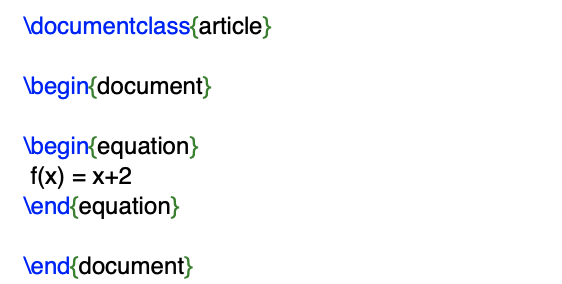
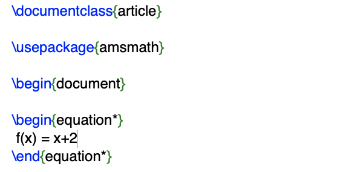

Latex Packages
What is a package
Use packages in LaTeX to add more functions. Demonstration of amsmath package and basic math typesetting.
LaTeX offers a lot of functions by default, but in some situations it can become in handy to use so called packages.
To import a package in LaTeX, you simply add the \usepackage directive to the preamble of your document.
How to install a package
When using Linux or Mac, most packages will already be installed by default and it is usually not necessary to install them.
In case of Ubuntu installing texlive-full from the package manager would provide all packages available.
The MiKTeX bundle in Windows, will download the package if you include it to your document.
Purpose of packages
There are countless packages, all for different purposes in my tutorials I will explain some of the most useful.
To typeset math, LaTeX offers (among others) an environment called equation.
Everything inside this environment will be printed in math mode,
a special typesetting environment for math. LaTeX also takes care of equation numbers for us:

How to use a package
The automatic numbering is a useful feature,
but sometimes it's necessary to remove them for auxiliary calculations.
LaTeX doesn't allow this by default, now we want to include a package that does:
